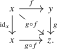

Agda links are temporarily unavailable for Chapters 2 and 3 while their code is updated to the foundations used in Chapter 1.
2.2 The Segal axiom
In this section, we will introduce the Segal axiom, which will provide unique compositions of morphisms in categories.
Axiom E (Segal axiom). For any category \(C\), the functor \[ (d_2^*,d_0^*)\colon \Triang (C) \to \Ar (C) \times _C \Ar (C) \] is an equivalence.
In particular, for every pair of composable morphisms \(f\colon x \to y\) and \(g\colon y \to z\) in \(C\) the category \(\Comp _{f,g}(C)\) of composites of \(f\) and \(g\) is contractible, being defined as the fiber of the equivalence \((d_2^*,d_0^*)\).
Notation 2.2.1. In a common categorical context \(\Gamma \), composable morphisms \(\Gamma \vdash f\colon x\to y\) and \(\Gamma \vdash g\colon y\to z\) determine a term \[ \Gamma \vdash g\circ f\colon x\to z, \] which we call their unique composite. It comes with a chosen \(2\)-simplex \(\sigma \) and specified identifications \(d_2^*(\sigma )= f\), \(d_0^*(\sigma )= g\), and \(d_1^*(\sigma )= g\circ f\).
Observation 2.2.2 (Exercise 2.6.1). Let \(C_0\) and \(C_1\) be categories and consider morphisms \(f_0\colon x_0 \to y_0\) and \(g_0\colon y_0 \to z_0\) in \(C_0\) and morphisms \(f_1\colon x_1 \to y_1\) and \(g_1\colon y_1 \to z_1\) in \(C_1\). Then the composite \((g_0,g_1) \circ (f_0,f_1)\colon (x_0,x_1) \to (z_0,z_1)\) in \(C_0 \times C_1\) is given by \((g_0 \circ f_0, g_1 \circ f_1)\).
For fixed objects \(x,y,z:C\), the definition of \(g\circ f\) works for expressions with values in \(C(x,y)\) and \(C(y,z)\) and a common source. Thus composition is functorial in \(f\) and \(g\). We may make this functoriality more explicit as follows:
Construction 2.2.3 (Composition functors). The Segal axiom gives an equivalence \[ q_C=(d_2^*,d_0^*)\colon \Triang (C)\longrightarrow \Ar (C) \times _C \Ar (C). \] Here the identification joining the two short edges is induced by \(d_2(1)=\overline 1=d_0(0)\) from Lemma 2.1.16. The vertex identifications of that lemma make \(q_C\) a functor over \(C^3\): on triangles we evaluate at \(\overline 0,\overline 1,\overline 2\), and on composable pairs we take the source and target of the first edge and the target of the second.
Choose an inverse \(j_C\) over \(C^3\), together with an identification \(\varepsilon _C\colon q_Cj_C=\id \) over \(C^3\). Composition is the functor \[ \Ar (C) \times _C \Ar (C) \xrightarrow {j_C}\Triang (C) \xrightarrow {d_1^*}\Ar (C). \] Thus we first complete a composable pair \((f,g)\) to a triangle, and then take its long edge. We denote this edge by \(g\circ f\).
The vertex identifications of Lemma 2.1.16 also identify the endpoints of the long edge with the first and last vertices. Hence composition is a functor over \(C\times C\). Passing to fibers over prescribed vertices \(x,y,z\) gives a functor \[ -\circ -\colon C(y,z)\times C(x,y)\longrightarrow C(x,z). \] The source and target identifications of \(g\circ f\) are obtained from these vertex comparisons followed by the corresponding components of \(\varepsilon _C\). Different choices of the inverse give identified composition functors over \(C\times C\).
Convention 2.2.4 (Composition of morphism expressions). For functors \(f,g,h\colon C\to D\), consider morphism expressions \(\alpha (x):f(x)\to g(x)\) and \(\beta (x):g(x)\to h(x)\) in context \(x:C\). Their endpoint identifications define a functor \(C\to \Ar (D)\times _D\Ar (D)\). Composing with the composition functor gives a morphism expression \[ \beta (x)\circ \alpha (x):f(x)\to h(x). \] This construction also acts on identifications of morphism expressions that retain the endpoints.
Lemma 2.2.5. For a functor \(F\colon C \to D\) and morphisms \(f\colon x \to y\) and \(g\colon y \to z\) in \(C\), there is an identification \[ F(g \circ f) = F(g) \circ F(f) \] in \(D(F(x),F(z))\). This identification is natural in the pair \((g,f)\): it forms an identification over \(D \times D\) between two functors \(\Ar (C) \times _C \Ar (C) \to \Ar (D)\).
Proof
Proof. Consider the chosen triangle in \(C\) expressing \(g \circ f\) as a composite. Applying \(F\) to this triangle produces a triangle in \(D\) with short edges \(F(f),F(g)\). By the Segal axiom, this triangle is identified with the chosen triangle in \(D\) expressing \(F(g) \circ F(f)\) as a composite of \(F(f)\) and \(F(g)\), in a way compatible with the two short-edge comparison identifications. The relation \(F(g \circ f) = F(g) \circ F(f)\) now follows by passing to the long edges of these identified triangles. On source and target, this identification is the restriction of the two a priori identifications on the short edges, and so it is compatible with the vertex identifications.
For naturality, we apply this argument to terms in the categorical context \(\Ar (C) \times _C \Ar (C)\). □
Lemma 2.2.6 (Unitality). For every morphism \(f\colon x\to y\), there are identifications \[ \id _y\circ f= f= f\circ \id _x \] in \(C(x,y)\), with its given endpoint identifications. They are natural in \(f\): they define identifications of functors \(\Ar (C)\to \Ar (C)\) over \(C\times C\).
Proof
Proof. We use the degenerate triangle
obtained by restricting \(f\) along \(s_0\). Its short edges are \((\id _x,f)\) and its long edge is \(f\). These identifications respect the three vertices: after uncurrying, their compatibility is given by the vertex identifications of Lemma 2.1.16.
The chosen triangle \(j_C(\id _x,f)\) has the same short edges, with comparison given by \(\varepsilon _C\). The Segal equivalence therefore identifies these two triangles, with this comparison on their short edges. Restriction to the long edge gives an identification \[ f\circ \id _x=d_1^*j_C(\id _x,f) = d_1^*s_0^*(f) = f. \] This identification also respects the prescribed source and target: the interchange law allows us to compare endpoints before or after comparing the triangles. The short-edge identifications of the degenerate triangle then cancel with their inverses, leaving the vertex comparisons followed by the components of \(\varepsilon _C\). These are exactly the source and target identifications used to define composition.
The same argument with \(s_1\) gives \(\id _y\circ f=f\).
For naturality in \(f\), we apply both constructions to the universal arrow on \(\Ar (C)\), working with term expressions in context \(\Ar (C)\). (In terms of actual functors, this translates to restriction and lifting through the Segal equivalence.) This results in the required identifications of functors over \(C\times C\). □
Proposition 2.2.7 (Associativity, cf. [RS17, Proposition 5.9]). For composable morphisms \(f\colon x\to y\), \(g\colon y\to z\), and \(h\colon z\to w\), there is an identification \[ h\circ (g\circ f)=(h\circ g)\circ f \] in \(C(x,w)\). These identifications are natural in the composable triple: they form an identification over \(C\times C\) between the two composition functors from \(\Ar (C)\times _C\Ar (C)\times _C\Ar (C)\) to \(\Ar (C)\).
Proof
Proof. As in the proof of unitality, we establish the desired identification (including the source and target compatibilities) for term expressions \(f\colon x \to y\), \(g\colon y \to z\) and \(h\colon z \to w\) in an arbitrary categorical context. Taking this context to be \(\Ar (C) \times _C \Ar (C) \times _C \Ar (C)\) then gives the final claim.
Consider the commutative triangle presenting the composite of \(f\) and \(g\), which has \(g \circ f\) as its long edge. Consider also the commutative triangle presenting the composite of \(\id _x\) and \(g \circ f\). Using the unitality of composition from Lemma 2.2.6, we may identify its long edge with \(g \circ f\) in \(C(x,z)\). Using the commutative square axiom, we may glue these two triangles into a commutative square

The pullback property in the commutative square axiom gives identifications of its two triangle restrictions with the chosen triangles, compatible with the specified identification of their long edges. Since this last identification lies in \(C(x,z)\), the endpoint comparisons agree at the two corners on the diagonal. At the other two corners, compatibility follows from the corresponding triangle. To identify these with the corners of the displayed square, recall that \(j_0=(s_0,s_1)\) and \(j_1=(s_1,s_0)\). The simplicial identities identify their boundary edges with the coordinate edges of \([1]\times [1]\); for example, \(j_0d_2=(0,\id _{[1]})\) and \(j_1d_2=(\id _{[1]},0)\). The vertex compatibilities of Lemma 2.1.16 give the specified comparisons under both product projections, so the product universal property identifies the corner comparisons as well. Thus all four edges have their prescribed endpoints, including the identification of the left side with \(\id _x\).
In a similar fashion, gluing the triangles for \((g,h)\) and \((h\circ g,\id _w)\) along the unitality identification in \(C(y,w)\) gives a commutative square
again with the displayed endpoint identifications.
Under the equivalence \(\Sq (C) \simeq \Ar (\Ar (C))\), we may regard these commutative squares as morphisms \(\id _x \to g\) and \(g \to \id _w\) in \(\Ar (C)\). Their composition in \(\Ar (C)\) corresponds to a commutative square in \(C\) of the form
Here the top and bottom edges are identified with \((h \circ g) \circ f\) and \(h \circ (g \circ f)\) by applying Lemma 2.2.5 to the two evaluation functors \(\ev _0,\ev _1\colon \Ar (C) \to C\). That lemma also ensures that these identifications retain the prescribed endpoints.
The two triangle restrictions of this square identify its diagonal with the composites along the top and right, and along the left and bottom, respectively. Indeed, the Segal equivalence compares each triangle with the chosen triangle for its two short edges. By Lemma 2.2.6, these composites are identified with the top and bottom edges themselves in \(C(x,w)\). We obtain the required identification \[ h\circ (g\circ f)=(h\circ g)\circ f. \] All constructions use restriction, the two axioms’ universal properties, and composition in \(\Ar (C)\), so they apply to the universal composable triple as asserted at the start. □
Observe that another way of formulating the Segal axiom, Axiom E, is that the commutative square
is a pullback square. This has the following corollary:
Proof
Proof. We will prove the claim for the left square and leave the analogous proof of the right square to the reader. Note that this square can be written as the outer square in the following commutative diagram:
and so it will suffice that each of these two squares is a pullback square. The first one follows from applying the pasting law of pullback squares to the following commutative diagram:
Here the outer square is evidently a pullback, and the right square is a pullback by the commutative square axiom, Axiom D. The second one similarly follows from applying the pasting law of pullback squares to the following commutative diagram:
Here the outer rectangle is again evidently a pullback square, and the right square is a pullback square by the Segal axiom, Axiom E. □
Remark 2.2.9. Informally, the previous corollary says that commutative triangles in \(C\) may equivalently be encoded in the following three ways:
- (1)
-
One might consider commutative triangles \([2] \to C\), which we will display as
- (2)
-
One might consider commutative squares \([1] \times [1] \to C\) whose restriction to \([1] \times \{0\}\) is constant, which we will display as
- (3)
-
One might consider commutative squares \([1] \times [1] \to C\) whose restriction to \([1] \times \{1\}\) is constant, which we will display as
We now explain how the usual naturality relation follows from our definition of natural transformations. Let \(\alpha \colon f\to g\) be a natural transformation between functors \(f,g\colon C\to D\). For a morphism \(u\colon a\to b\) in \(C\), precomposition of the interval diagram of \(\alpha \) \(C\times [1]\to D\) with \(u\times \id _{[1]}\) gives a commutative square
Its two triangles have the same long edge. After taking composites, we write \[ \alpha (u):g(u)\circ \alpha (a)=\alpha (b)\circ f(u) \] for the resulting comparison in \(D(f(a),g(b))\). Its endpoint identifications are those supplied by Lemma 2.1.16 and the comparison with the chosen composites in Construction 2.2.3.
The same construction gives the following interchange law.
Lemma 2.2.10 (Interchange for natural transformations). Let \(F,G\colon C\to D\) and \(u,v\colon B\to C\) be functors, and let \(\alpha \colon F\to G\) and \(\beta \colon u\to v\) be natural transformations. There is a commutative square in \(\Fun (B,D)\)
This gives an identification in \(\Hom _{\Fun (B,D)}(Fu,Gv)\) of the form \[ (G\beta )\circ (\alpha u)=(\alpha v)\circ (F\beta ). \]
Proof
Proof. Let \(A\colon [1]\times C\to D\) and \(H\colon [1]\times B\to C\) encode \(\alpha \) and \(\beta \), respectively. The composite \[ [1]\times [1]\times B \xrightarrow {\id _{[1]}\times H}[1]\times C \xrightarrow {A}D \] curries to a functor \([1]\times [1]\to \Fun (B,D)\). Its four edges, with the endpoint identifications supplied by \(A\) and \(H\), are precisely the four transformations displayed above. Restricting to the two triangles, using the restriction identifications fixed above, gives the two composites with a common long edge and the prescribed source/target. This gives the displayed identification. □
Finally, the conversion of Construction 2.1.5 is compatible with composition of primitive identifications. For \(\alpha \colon f=g\) and \(\beta \colon g=h\), consider the constant triangle at \(f\), with vertex identifications \(\id _f\), \(\alpha \), and \(\beta \circ \alpha \). Its short edges represent \(\alpha \) and \(\beta \), using \(\alpha \) to identify the second short edge with the constant interval at \(g\). Its long edge represents \(\beta \circ \alpha \). The Segal equivalence identifies this triangle with the chosen composite triangle, retaining the short-edge comparisons. Passing to the long edge therefore gives the required compatibility with the prescribed source/target, as in Construction 2.2.3.
Supplementary notes
- Substitution in morphism expressions AI-generated